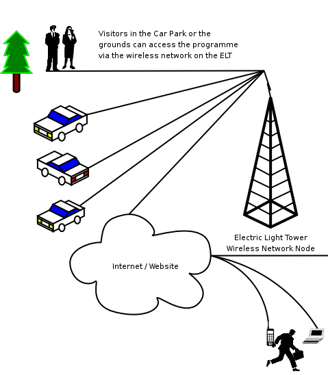
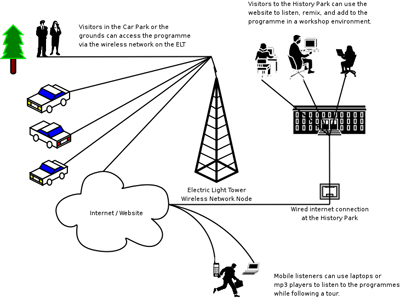

|
 Introduction Traffic Island Disks is a radio programme about music, people and places. We invite you to roam the streets of the city with us looking for people wearing headphones, stopping them, and interviewing them while recording whatever they are listening to. Then you can use the website to upload, download and mix the results into a musical tour of the city. Leading up to ISEA, The People Speak team will hold a series of one-day workshops, travelling the VTA bus route 73 around San Jose, recording what passengers are listening to, and what they have to say about it as they ride through San Jose. Then we'll mix together an audio tour of the route. This will be the first episode of a San Jose Traffic Island Disks show called 'Electric Light Radio'. This tour will be available from our website, and from a wireless kiosk on the Electric Light Tower at Kelly History Park, where participants can find out how to record their own interviews and contribute to an ongoing musical map of San Jose.
Workshops Traffic-Island Disks is a radio show format every city should have: a channel for people's musical tastes to spread from the street onto the radio, rather than the other way round. It's also just a great way to meet interesting people and find new music! Because we can't be everywhere, talking to everyone, we want to show other people how to do this show – so for ISEA, we're going to design some manuals and run workshops to show people how to use easily available technology – such as old, abandoned apple ipods to create and share a Traffic-Island Disks radio show. Listening Listeners can access the show in a number of ways: Via the Website - The website will allow people to upload and download Traffic Island Disks recordings easily, and to plot where the recording was taken on a city map.
- The website will also be one way to listen to the recordings, or to download them and listen as you walk or ride around a tour.
Via a live performance during ISEA
- For the final night of the ISEA Festival, The People Speak will do a live show, mixing the tunes we've found in San Jose and some of the interviews into a live show.
Via the Electric Light Tower
- The Wireless network node on the Electric Light Tower is intended to remain after the event if possible, as a repository of the music and interviews collected through the process, and as a way of continuing to collect and redistribute them. Visitors can access this via wireless-enabled laptops and mobile devices, or in a workshop environment at the visitor's centre.
Other Outcomes
- We hope to form a relationship with a local radio station to try and get the programme on air, and if the workshop group is willing, to continue to broadcast the show to San Jose.
The Electric Light Tower This monumental reconstruction of the famous Electronic Light Tower of San Jose is the emblematic logo of this edition of Traffic Island Disks – titled 'Electric Light Radio'. Although it was never a radio transmission tower, the ambition – to light the whole of downtown San Jose at night from a single point 'as if it were day' is inspirationally insane. Our ambition – almost as ambitious is to gather and redistribute music from all over the city via a wireless network node on top of the the ELT. The wireless network node will contain a local version of the Electric Light Radio website, allowing people to upload and download new recordings which will then be synchronised online. This diagram explains how visitors will access Electric Light Radio from the tower and at the history park:  URLs:
traffic island disks homepate
http://traffic-island.co.uk
The People Speak Network
http://theps.net |